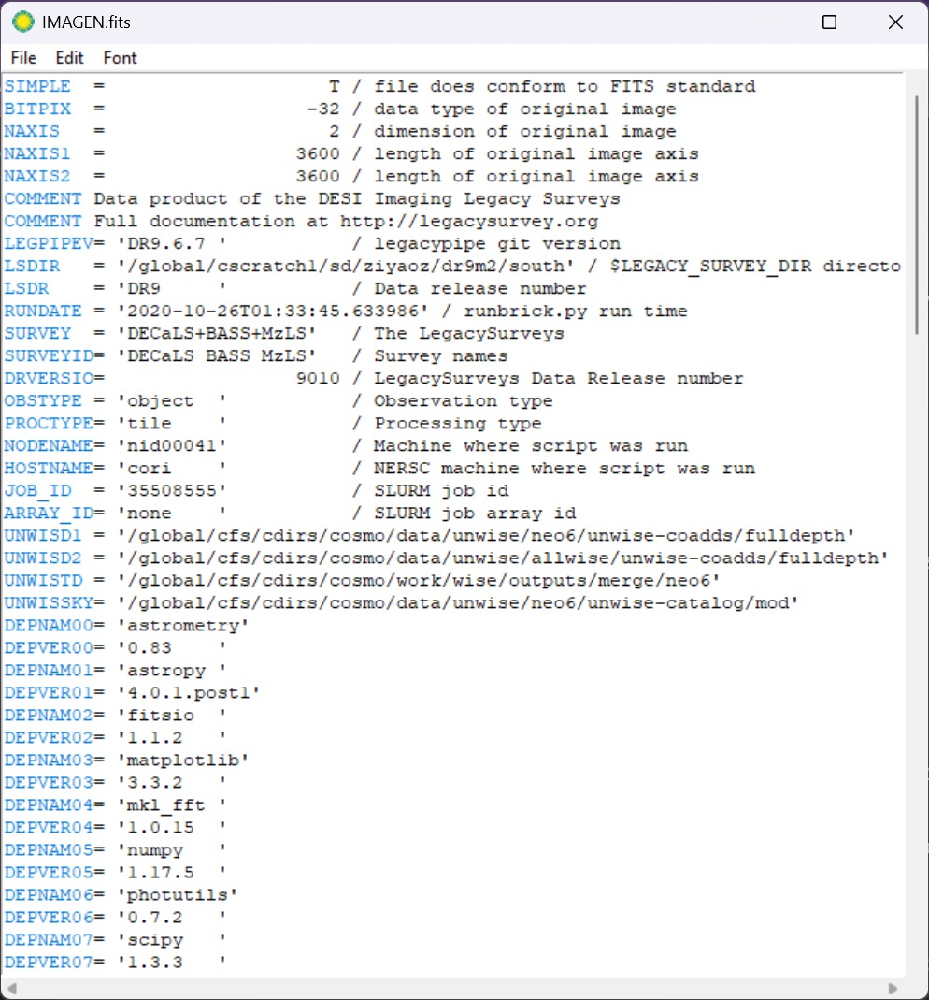
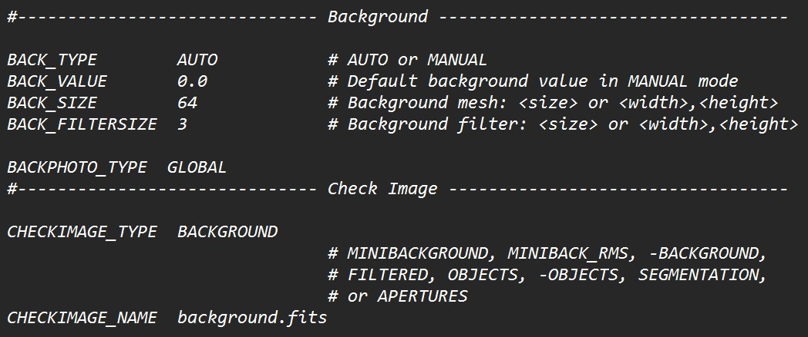
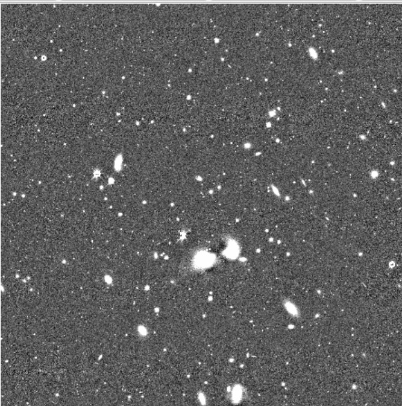
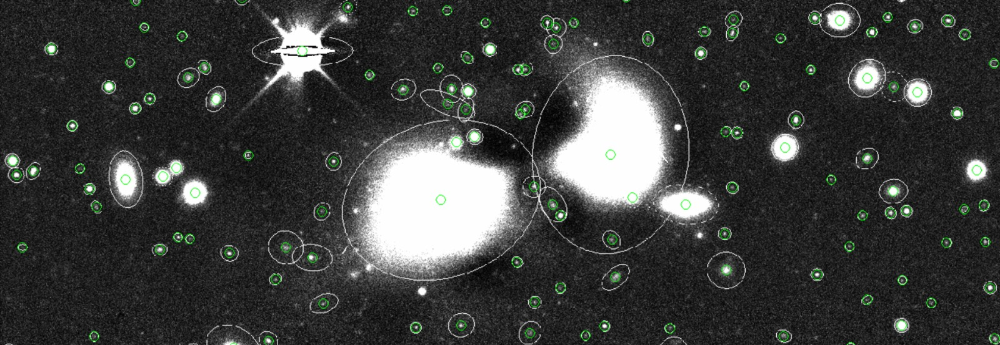

Ahora que se han explicado los parámetros del archivo principal de configuración default.sex, podemos empezar a usar SExtractor siguiendo los pasos mencionados al principio. Para empezar, creamos un directorio en donde guardaremos nuestra imagen y los archivos de configuración principales mencionados anteriormente. En este caso, el directorio tendra una carpeta para los aarchivos default, para la imagen y otra para las corridas que hagamos en SExtractor, además de tener un excel con todos los cambios que se haga a cada parámetro, todo lo anterior es opcional pero ayuda a mantener un orden en el análisis.
Antes de determinar el background de nuestra imagen, debemos que los parámetros sobre la información de la imagen sean correctos, esto es como si fueramos a hacer un experimento, antes de empezar con las mediciones debemos asegurarnos que las herramientas que vamos a emplear esten calibradas y funcionando correctamente. Para ello, debemos leer el encabezado de nuestra imagen en este caso se usó el software de SAOImageDS9 (también se puede leer el encabezado con ayuda de python).

Figura 8: Encabezado de la imagen que usamos para el análisis, mostrado con SAOImageDS9.
Del encabezado podemos obtener algo de información que nos es útil, lo primero es notar que nuestra imagen proviene del DESI Legacy Survey que son un conjunto de proyectos astronómicos que fueron diseñados para capturar imágenes profundas de una gran región del cielo extragaláctico. [8]
Información básica de la imagen
NAXIS1/NAXIS2=3600 x 3600: La imagen es de 3600 x 3600 píxeles
Imagen tipo coadd (imagen combinada/apilada de múltiples exposiciones).
Además, la versión del pipeline que se registró es LEGPIPEV=DR9.6.7
Instrumento y observación
TELESCOP=CTIO 4.0-m telescope (Blanco telescope en Cerro Tololo, Chile)
INSTRUME=DECam (Dark Energy Camera)
Finalmente, los parámetros que podemos obtener del header para configurar en nuestro archivo default.sex son los siguientes:
MAG_ZEROPOINT 22.5
CD1_1 = -7.27777777777778E-05 (deg/pix)
CD2_2 = 7.27777777777778E-05 (deg/pix)
Esto nos da la escala de placa (pixel scale), convertido a arcsec/pixel:
$$7.27777778\times10^{-5}\times3600=0.262\ \text{arcsec/pix}$$
Además, investigando un poco encontramos que un valor típico SEEING_FWHM publicado por el DESI Legacy Survey ronda entre 1.0-1.3 arcsec, por lo que se tomaremos un valor de 1.2 arcsec como punto de partida y refinarlo posteriormente con parámetros que SExtractor nos proporciona. Por otra parte, para elegir nuestro filtro de convolución, tomamos nuestros valor de SEEING_FWHM y lo convertimos a píxeles:
$$\text{FWHM}_{\text{pxls}}=\frac{1.2}{0.262}=4.5$$
Por lo que usaremos el filtro gauss_4.0_7x7.conv.
Background
Después de hacer una configuración inicial a los parámetros, se puede empezar a determinar el background de la imagen, aquí entran en juego los parámetros BACK_SIZE y BACK_FILTERSIZE, en muchos artículos se menciona que para estos parámetros, valores más comunes son de 64 y 3 respectivamente [5][6]. Para visualizar el background usaremos los parámetros CHECKIMAGE_TYPE y CHECKIMAGE_NAME que están en el archivo default.sex, para el primero tomaremos el valor de BACKGROUND y el segundo parámetro será para el nombre del archivo de salida, que en este caso será background.fits:

Figura 9: Parámetros para la determinación del background y la salida de la imagen de background en el archivo default.sex.
Con los parámetros configurados, en nuestra terminal vamos a posicionarnos en el directorio donde tenemos nuestra imagen y los archivos de configuración, y ejecutamos el siguiente comando:
$ sex IMAGEN.fits
Lo que nos generará dos archivos de salida, uno es el catálogo con el nombre que le dimos en el parámetro CATALOG_NAME y el otro archivo es la imagen del background con el nombre que le dimos en el parámetro CHECKIMAGE_NAME, este último podemos visualizarlo en DS9.
Figura 10: Background de la imagen obtenido con SExtractor (derecha) comparado con la imagen original (izquierda)
En la figura 10 podemos ver que el background obtenido está tomando algo de brillo de los objetos ubicados en la parte central de la imagen; en la imagen original se observa que corresponden a dos galaxias muy brillantes. Esto ocurre porque, con un BACK_SIZE relativamente pequeño, las celdas de la malla que caen sobre las galaxias no contienen suficientes píxeles de cielo puro, por lo que el algoritmo de sigma-clipping no logra excluir completamente su flujo, sobreestimando el background local en esa zona. Aumentar BACK_SIZE (o BACK_FILTERSIZE) puede mitigar este efecto, pero si se hace demasiado grande, el background se vuelve excesivamente suave y puede terminar absorbiendo objetos extendidos de bajo brillo superficial.
Vamos a verificar el resultado final de la sustracción poniendo como valor, en CHECKIMAGE_TYPE, -BACKGROUND; esto es la imagen original menos el mapa de background. Lo anterior nos devuelve la siguiente imagen .fits

Figura 11: Imagen final con el fondo sustraído, se logra ver una mancha oscura justo encima/entre las galaxias ubicadas al centro de la imagen.
En la figura 11 podemos ver una región más oscura justo sobre las dos galaxias centrales, lo cual evidencia una sobre-sustracción de flujo en esa zona; es decir, el background estimado ahí fue mayor al real. Una opción podría ser aumentar el tamaño de la malla, sin embargo, para este caso, se decidió mantener el tamaño de la malla y continuar con la detección de objetos.
Detección de objetos (Umbralización)
Lo siguiente es definir el umbral que SExtractor usará para detectar objetos, para este caso tomaremos el valor de DETECT_THRESH de 1.5 así como el valor de ANALYSIS_THRESH de 1.5, además de un valor de DETECT_MINAREA de 3 píxeles, y generaremos otro checkimage con el valor de APERTURES. Al correr SExtractor podemos visualizar lo siguiente en la terminal:
Figura 12: Salida obtenida en la terminal después de correr SExtractor
Podemos observar que el valor global del background es muy cercano a cero, además tenemos el valor de la desviación estándar del background, que es de 0.00294733 y con un umbral de detección de 0.004421. Por otra parte, podemos notar que SExtractor obtuvo 2812 objetos que superaron el umbral inicial de detección, de los cuales 2577 fueron considerados como objetos válidos después del proceso de deblending y cleaning (aún no se configuran estos parámetros, por lo que se toman los valores por defecto).
Ahora, usando la opción de CHECKIMAGE_TYPE con el valor de APERTURES, podemos visualizar los objetos detectados por SExtractor a los que se les dibuja un circulo o una elipse, esto es la apertura fotométrica.
Figura 13: Aperturas fotométricas sobre los objetos detectados por SExtractor
Además, con ayuda de DS9, podemos sobreponer en la imagen el catálogo obtenido lo que mostrará un circulo verde sobre cada objeto detectado.

Figura 14: Visualización de la detección de objetos en circulos verdes usando el catálogo obtenido por SExtractor.
Deblending
Para el proceso de deblending, se tomará un valor de DEBLEND_NTHRESH de 32 y probaremos para 4 valores distintos de DEBLEND_MINCONT (0.0001,0.001, 0.005 y 0.01) para observar algun cambio en la detección de objetos.
DEBLEND_MINCONT=0.01Figura 15: Comparación de la detección de objetos con diferentes valores de DEBLEND_MINCONT. A medida que el valor aumenta, se detectan menos objetos, lo que indica una menor separación de fuentes cercanas. La imagen empleada es con el parámetro APERTURES.
La elección del valor para DEBLEND_MINCONT depende del objetivo del análisis, valores pequeños favorecen la separación de fuentes cercanas con gran diferencia de brillo, útiles para blends de galaxias como el observado en este campo, pero con riesgo de sobre-fragmentar objetos extendidos con estructura interna compleja. Valores más grandes son más conservadores, evitando divisiones espurias en galaxias con subestructura, pero corren el riesgo de no separar componentes reales de bajo contraste de brillo respecto a su vecino.
Para este caso, se optó por un valor de DEBLEND_MINCONT=0.005 que es un valor intermedio, con el proposito de separar las galaxias brillantes del centro de la imagen.